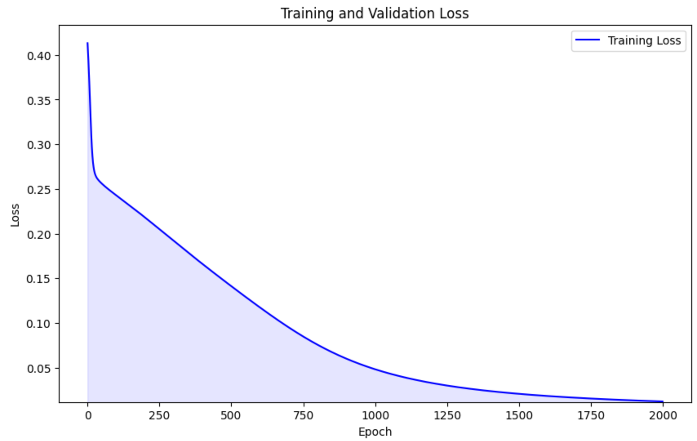

Neural networks used to feel like magic to me. I’d watch them predict, classify, and generate things and think, "How does this actually work?" I wanted to break through that abstraction and understand every piece of how they function, not just use them, but build one myself.
That curiosity led me to create my very first neural network from scratch, no PyTorch, no TensorFlow. Just Python and NumPy. I wanted to get a feel for how forward passes, backward propagation, gradients, and optimization actually play out under the hood.
I worked with a minimal deep learning library called MicroTorch, which helped me focus on the fundamentals while still allowing for experimentation. I built my own layers, activation functions, loss functions, and optimizers, and trained the network on simple datasets to see how it learned over time.
One of my favorite moments? Watching the loss curve drop for the first time and realizing, “Wait, it’s actually learning!”
This project really helped me develop an intuition for what’s going on inside a neural net. And now that I’ve done it by hand, I appreciate the frameworks we use daily so much more, because I finally understand the machinery they abstract away.
If you're learning neural networks too, I highly recommend trying to build one yourself, even a tiny one. It might be frustrating at first, but it’s such a rewarding way to connect the dots.
